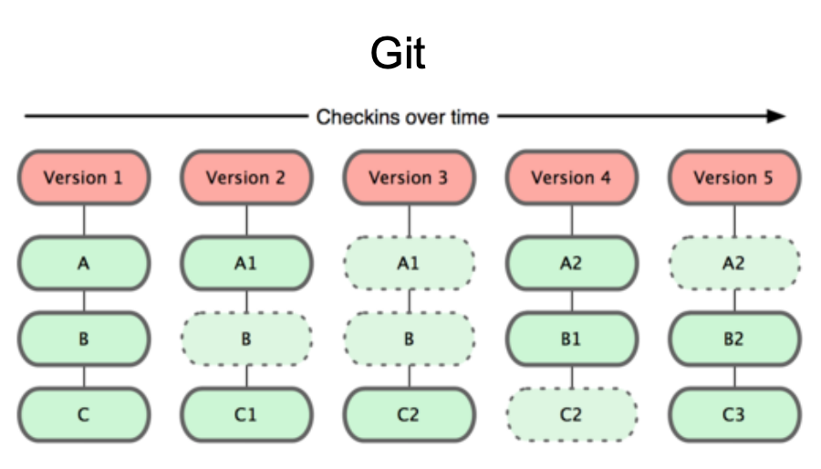

What is Git?
A VCS Created by Linus Torvalds in 2005 to do version control on Linux Kernel
What is VCS (Version Control System)
A system that keeps records of changes
Find out who made what changes & when
Allows one to also revert to any previous state
Git is a form of distributed VCS
Subversion/CVS are forms of centralized VCS
## Git Snapshots
Each check-in version
fades in, then out when we move to the next step
fades in, then obfuscate when we move to the next step
blue only once